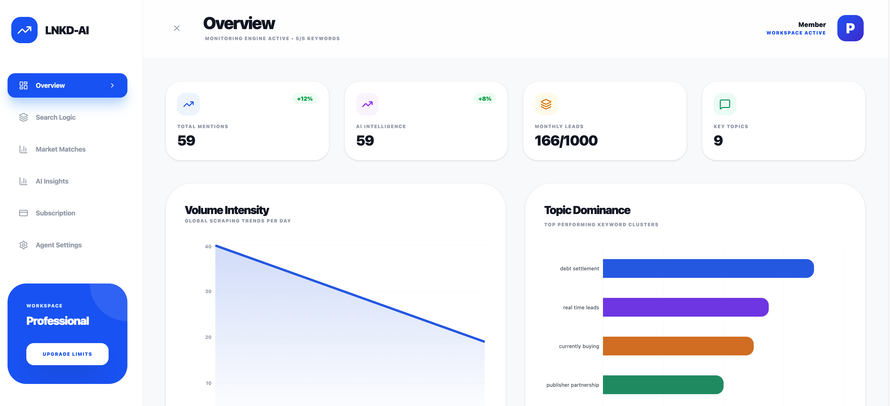
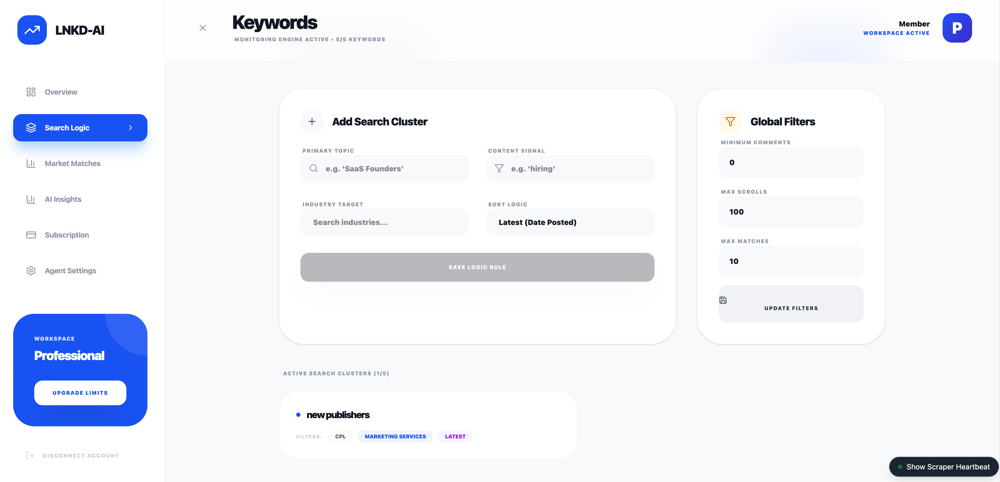
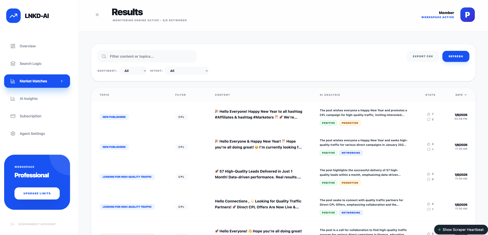

A technical deep dive into building LNKD-AI, a browser-based automation tool for high-precision data enrichment.
Introduction
In the world of B2B sales and recruitment, LinkedIn is the gold standard for data. However, finding high-quality “signals”—specific posts or activities that indicate intent—is like finding a needle in a haystack. Manual searching is time-consuming, repetitive, and prone to human error.
To solve this, I built LNKD-AI, a custom browser extension that transforms LinkedIn into a programmatic data source. By combining modern web technologies with intelligent pattern matching, this tool automates the discovery of high-value prospects, saving countless hours of manual research.
Purpose and Functionality
LNKD-AI is designed to automate the “Search & Qualify” loop. Its primary function is to autonomously navigate LinkedIn search results, scan post content for specific keywords or topics, and capture relevant data for lead generation.
Key Features:
- Autonomous Navigation: automatically scrolls through infinite feeds and handles pagination (clicking “Show more results”).
- Intelligent Filtering: Uses a custom “Smart Regex” engine to distinguish between noise and actual signals, ignoring ads and irrelevant content.
- Real-time Extraction: Scrapes post content, author details, and engagement metrics (likes, comments) in real-time.
- Cloud Sync: Instantly syncs qualified leads to a Supabase backend for further processing or CRM integration.


Underlying Technologies
The application is built as a Manifest V3 Chrome Extension, leveraging a modern robust stack for performance and maintainability.
| Layer | Technology | Purpose |
|---|---|---|
| Core | React 19 | Provides a reactive declarative UI for the dashboard and settings. |
| Build Tool | Vite | Ensures ultra-fast builds and Hot Module Replacement (HMR) during development. |
| Styling | Tailwind CSS v4 | Enables rapid, utility-first styling for a polished, modern interface. |
| Backend | Supabase | Handles authentication, database storage (PostgreSQL), and real-time data sync. |
| Browser API | WebExtension Polyfill | Standardizes cross-browser compatibility (Chrome, Edge, Firefox). |
| Icons | Lucide React | specific iconography. |
The Automation Engine
The heart of LNKD-AI is its automation engine, which handles the complex task of interacting with a dynamic single-page application (SPA) like LinkedIn.
1. Smart Regex Pattern Matching
Standard string matching fails on social media due to variations in capitalization, punctuation, and plurals. I implemented a createSmartRegex utility that normalizes text and generates flexible patterns.
It handles: * Normalization: Removes accents (e.g., “Caffè” -> “Caffe”) and standardizes “smart quotes”. * Pluralization: Automatically matches singular and plural forms (e.g., “developer” matches “developers”). * Word Boundaries: Uses \b to ensure “Java” doesn’t match “JavaScript”.
Code Example: Smart Regex Generation
/**
* Creates a smart regex for matching keywords.
* Supports plurals on the last word, flexible whitespace, and normalized characters.
*/
export function createSmartRegex(keyword) {
// Normalize keyword to match content normalization
const normalized = normalizeText(keyword);
const sanitized = normalized.trim().replace(/[.*+?^${}()|[\]\\]/g, '\\$&');
const tokens = sanitized.split(/\s+/);
if (tokens.length > 0) {
const last = tokens.pop();
// Support simple pluralization (s, es, ing) on the last word
tokens.push(`${last}(?:s|es|ing)?`);
}
const pattern = tokens.join('[\\s\\u00A0]+');
// Strict boundary matching to prevent partial matches
return new RegExp(`\\b${pattern}\\b`, 'i');
}2. Intelligent Auto-Scrolling
LinkedIn uses “infinite scroll,” meaning content loads dynamically as you scroll down. The automation script mimics human behavior to trigger these loads reliably. It monitors the DOM for height changes and retries if the network is slow.
Code Example: Adaptive Scroll Logic
// Smart scroll: Check for height change to confirm content load
let heightChanged = false;
const scrollStart = Date.now();
while (Date.now() - scrollStart < maxWait) {
await sleep(checkInterval);
const newHeight = document.body.scrollHeight;
if (newHeight > previousHeight) {
previousHeight = newHeight;
heightChanged = true;
break; // Content loaded successfully
}
}
// Fallback: programmatic "jiggle" or clicking "Show More"
if (!heightChanged) {
const clicked = await clickShowMoreResults();
if (clicked) {
await sleep(2000); // Wait for pagination load
}
}3. Noise Reduction (Ad Filtering)
To ensure data quality, the scraper proactively identifies and discards “Promoted” or “Sponsored” posts using DOM inspection.
const isPromoted =
!!promotedHeader ||
(actorDescription && actorDescription.innerText.includes('Promoted')) ||
(subDescription && subDescription.innerText.includes('Promoted'));
if (isPromoted) {
console.debug("[Scraper] Skipping promoted/sponsored post");
return; // Skip processing
}AI Classification & Sentiment Analysis
Once raw data is scraped, the automation doesn’t stop. I implemented a secondary processing layer using Supabase Edge Functions and OpenAI’s GPT-4o-mini to enrich the data.
Instead of running heavy AI models in the browser (which exposes API keys and slows down the client), the extension syncs raw posts to Supabase. A background function then processes each post to extract structured insights.
capabilities:
- Sentiment Analysis: Classifies posts as
positive,neutral, ornegative. - Intent Recognition: Categorizes the author’s intent into
networking,job_seeking,promotion,knowledge_sharing, orother. - Executive Summary: Generates a 1-2 sentence summary of long posts for quick skimming.

Code Example: Server-Side AI Analysis (Supabase Edge Function)
// supabase/functions/analyze-post/index.ts
const prompt = `Analyze this LinkedIn post and provide a structured analysis.
Post Content: ${post.content}
Return JSON with:
- summary: 1-2 sentence summary
- sentiment: positive/neutral/negative
- intent: networking/job_seeking/promotion/knowledge_sharing`;
const response = await fetch('https://api.openai.com/v1/chat/completions', {
method: 'POST',
headers: { 'Authorization': \`Bearer \${openaiApiKey}\` },
body: JSON.stringify({
model: 'gpt-4o-mini',
messages: [{ role: 'user', content: prompt }],
response_format: { type: "json_object" }
})
});Future Roadmap: Autonomous Posting
The next phase of development focuses on closing the loop by automating engagement.
Planned Features:
- Draft Generation: Automatically generating personalized comment drafts based on the post’s analyzed sentiment and intent.
- Approval Workflow: A dashboard UI to review, edit, and approve AI-generated comments before they are posted.
- Direct API Integration: moving beyond browser automation to use LinkedIn’s Marketing APIs where possible, or continuing with secure browser-context injection for authentic user-like behavior.
ROI and Time Savings
The value of this automation is quantifiable.
- Manual Process: A human can actively read, qualify, and copy-paste data for about 1 post every 45 seconds.
- Automated Process: LNKD-AI scans and qualifies posts at a rate of 1 post every 0.1 seconds (processing speed), with the only bottleneck being the page scroll speed.
Scenario: Finding 50 high-quality leads from a feed of 1,000 posts. * Manual: 1,000 posts * 10 seconds (scanning) = ~2.7 hours of pure scanning time. * LNKD-AI: Scans 1,000 posts in ~5 minutes.
Result: >95% reduction in time spent on data sourcing. This allows the user to focus solely on high-value outreach rather than data entry.
Conclusion
LNKD-AI demonstrates how custom software can bridge the gap between manual labor and enterprise-grade data tools. By understanding the DOM structure of modern web apps and applying intelligent pattern matching, we can unlock massive efficiency gains in business processes.